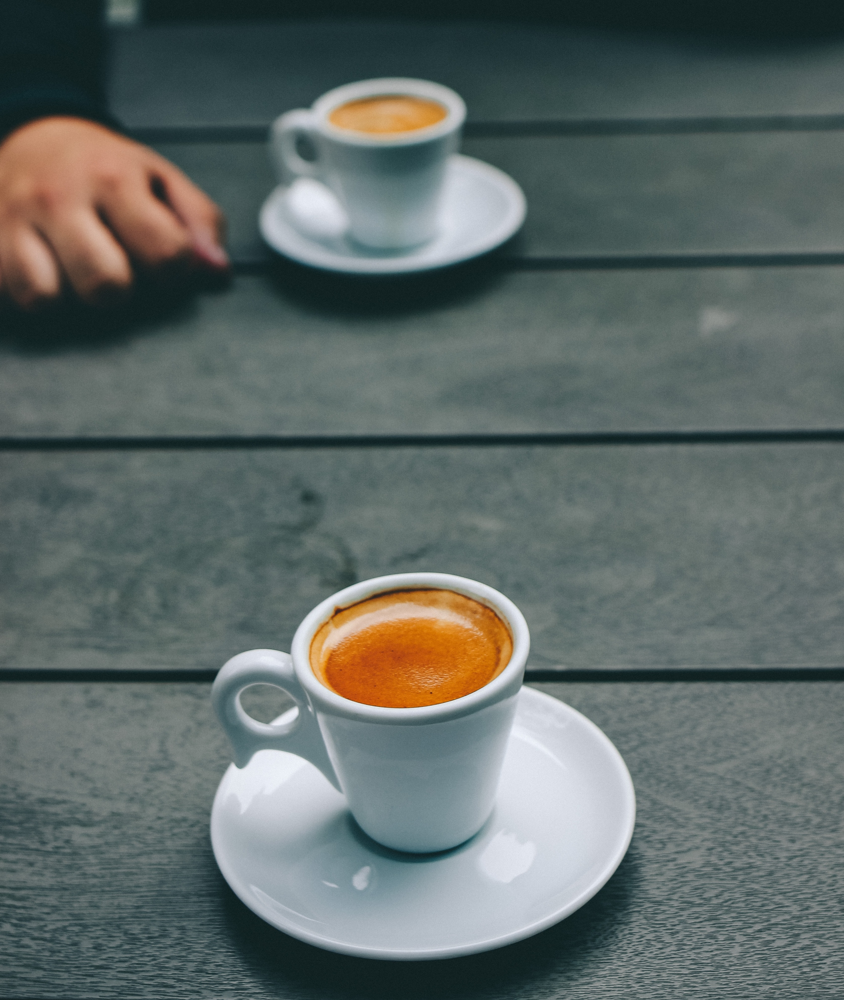
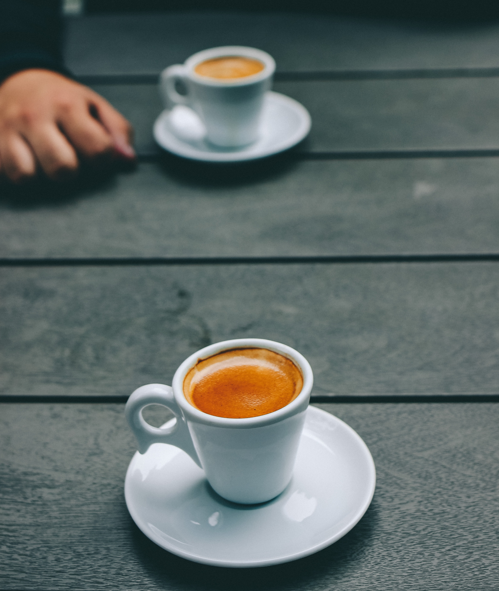

About our Company
Our story begins in 1995 along the cobblestone streets of Tbilisi. It was here where we opened our first store, offering fresh-roasted coffee beans, tea and spices from around the world for our customers to take home. Ten years later we created our new recipes. After joining the company in 2005, a different cobblestone road would lead him to another discovery. It was on a trip to Milan in 2004 that our friend Roger first experienced Italy's coffeehouses, and he returned to Tbilisi inspired to bring the warmth and artistry of its coffee culture to Coffee Shop Tbilisi. By 2005, we swapped our brown aprons for green ones and embarked on our next chapter as a coffeehouse. It takes many hands to craft the perfect cup of coffee from the farmers who tend to the red-ripe coffee cherries, to the master roasters who coax the best from every bean, and to the barista who serves it with care. We are committed to the highest standards of quality and service, embracing our heritage while innovating to create new experiences to savor. We like to say that we are not in the coffee business serving people, but in the people business serving coffee.


 
